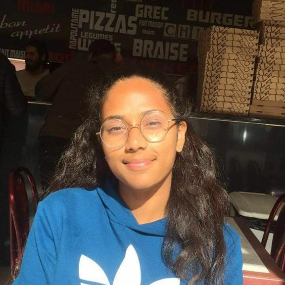
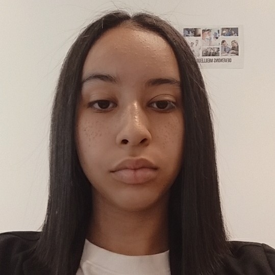
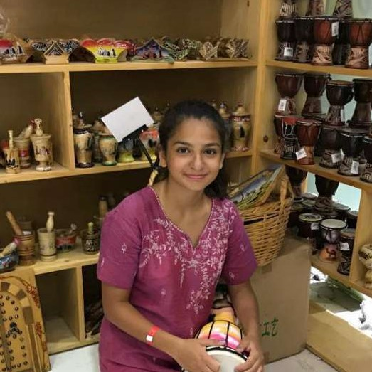

Bonjour, je m'appelle Sara. J'ai 18 ans, je viens d'avoir le bac et l'année prochaine je vais en DUT à l'université de Paris, Descartes. Je me suis inscrite à Jump in Tech, car j'aime l'informatique et je voulais en apprendre plus. Pour ce projet, je me suis occuper des réseaux sociaux.

Bonjour, je m'appelle Linda. J'ai 14 ans, l'année prochaine j'entre en seconde dans un lycée de Créteil, Léon Blum. Je me suis inscrite à Jump in Tech, car je pense que c'est un plus sur le CV, la lettre de motivation, et pour le métier que je souhaiterai exercer(ingénieur chimiste). Pour ce projet, je me suis occuper du site web.

Bonjour, je m'appelle Marilina. J'ai 15 ans, et l'année prochaine je vais en seconde au lycée Sait-Thomas, à Saint-Germain-en-Laye. Je me suis inscrite à Jump in Tech, car je veux travailler dans l'e-santé. Pour ce projet, je me suis occuper du contenu.
Aujourd'hui nous avons la chance de vous présenter ce projet, grâce à l'association Becomtech. Becomtech est une association créé à la base en 2015, par Salwa Toko, David Cadasse et Dorothée Roch. C'est un projet qui oeuvre pour la mixité dans les métiers de la Tech et du digital. Afin d'approfondir leur but, il y a le programme Jump in Tech. Un programme spécialisée pour les filles entre 14 et 17 ans, qui les forment au numérique et à l'informatique. Ce projet est pour le hackaton. Nous avons décider de créer un site web et des profil de différents résaux sociaux, nous vous expliquerons qu'est-ce qu'une intelligence artificielle, et nous metterons des témoignages de diverses personnes. Nous espérons que vous passerez un bon moment à découvrir qu'est-ce que l'intelligence artificielle.